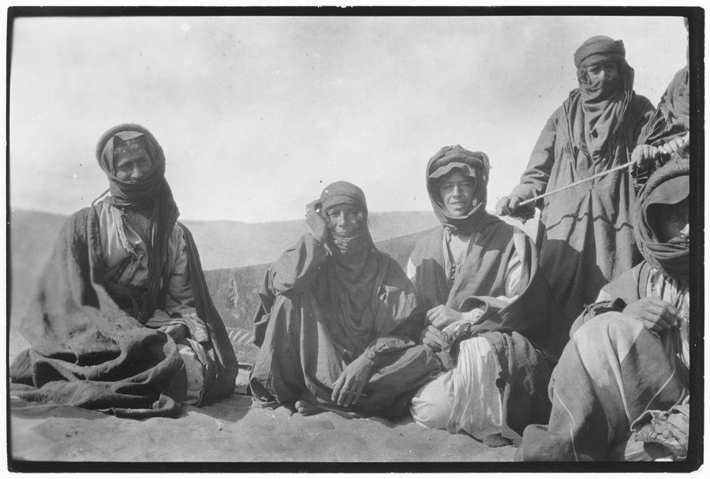

סלף (אבות). נוף אלג׳ויסר, 2020
אלג׳ויסר מריצה מודל זיהוי על צילומים של גרטרוד בל. המודל קורא לגבר בדואי ״סמוראי״, בביטחון של 58%. אחר כך היא מוחקת את האנשים מהתמונות (בעזרת U2-Net), ונשארות רק צלליות לבנות.
מה קורה בתוך המודל כשהוא ״רואה״ תמונה.
תגובה לאנטוניו סומאיני, ״מרחבים לטנטיים: בינה מלאכותית, אמנות והארכיון״, אוקטובר 196 (2026)

אלג׳ויסר מריצה מודל זיהוי על צילומים של גרטרוד בל. המודל קורא לגבר בדואי ״סמוראי״, בביטחון של 58%. אחר כך היא מוחקת את האנשים מהתמונות (בעזרת U2-Net), ונשארות רק צלליות לבנות.


איזה ארכיון, ומה חסר בו? תמונות של בדואים שצילמה גרטרוד בל, בריטית שהסתובבה באזור בתחילת המאה ה-20, ועוד תמונות ״מזרחיות״ מגטי. אנשים מבחוץ צילמו אותן. מה שחסר זה האנשים עצמם: איך קראו להם, מה הם חשבו, אם בכלל רצו שיצלמו אותם.
מה המרחב הלטנטי חושף, ומה הוא מעלים? חפץ ביד של ילד הופך ל״סקייטבורד״, בגדים של גבר בדואי הופכים ל״מדים צבאיים״. זה חושף כמה המודל לא מכיר את העולם הזה. מה שמוסתר: המודל אף פעם לא מודה שהוא לא יודע.
גליץ׳, הסתרה או סירוב? סירוב. היא מוחקת את האנשים כדי שאף מודל לא ילמד מהם. בלשונה: ״סירוב לאפשר לנתונים מסוימים להפוך לחומר אימון״ (“a refusal to allow certain data to become training material”, עמ׳ 46). וגם על התמונות המחוקות, מודל עדיין מייצר את אותן תנוחות. המבט של הצלם נשאר.
סומאיני כותב שמה שמארגן את המרחב הלטנטי זה כוח ״לא-אנושי, סטטיסטי״ (עמ׳ 39). פתחנו את המודל כדי לראות מה הכוח הזה עושה בפועל: קודם בתמונה אחת, ואז בארבעה מודלים ובארבעה ניסוחים.
המהלך: מערכת סיווג משלנו. הכלי: CLIP (ViT-B/32), מודל שמתאים בין תמונות לטקסט, ושסומאיני מזכיר במאמר.
התמונה(1)
המודל לא רואה נשים, אוהל או ילד. הוא הופך את התמונה ל-512 מספרים. את הדרך לעשות את זה הוא למד מ-400 מיליון תמונות מהרשת והכיתובים שאנשים כתבו להן (רדפורד ואחרים, 2021).
התמונה, כמו שהמודל ״רואה״ אותה
שתי מילים(2)
גם כל משפט הופך ל-512 מספרים. אחד מהרשימה של שש דמויות, ואחד מתוך הכיתוב של בל עצמה לתמונה הזאת.
“a photograph of a samurai”
“a photograph of tribeswomen at an encampment”, המילים של בל
כפל וחיבור(3)
מכפילים את המספר הראשון של התמונה במספר הראשון של המשפט, את השני בשני, וכך 512 פעם, ומחברים. זה כל ה״התאמה״. אפשר לבדוק עם מחשבון: המספרים למעלה נותנים בדיוק את התוצאות האלה.
הכיתוב של בל מתאים לתמונה יותר מ״סמוראי״.
מאה אחוז(4)
ואז אנשים כתבו כלל: כל ציון מושווה רק לשאר המילים ברשימה שלו, וההפרשים מוגדלים עד שהכול מסתכם ל-100%. ״סמוראי״ ניצח רשימה חלשה. הכיתוב של בל הפסיד לרשימה חזקה.
אין פה בחירה, ואין פה ראייה. יש כפל, חיבור, וכלל של מאה אחוז, וכל השאר זו רשימה שמישהו כתב.
מודל אחר, ניסוח אחר(5)
עד עכשיו: מודל אחד, ניסוח אחד. אז שאלנו את אותה שאלה, על אותן שש תמונות, בארבעה מודלים ובארבעה ניסוחים. כל משבצת במפה היא התשובה של ריצה אחת.
ארבעת המודלים. כולם עושים אותו דבר: הופכים תמונה ומשפט למספרים ומודדים כמה הם קרובים. ההבדל הוא במה הם למדו ואיך הם מסתכלים.
| מי ומתי | ממה למד | איך הוא מסתכל על התמונה | גודל | |
|---|---|---|---|---|
| CLIP B/32 | OpenAI, 2021 | 400 מיליון תמונות מהרשת עם הכיתובים שלהן | חותך אותה ל-49 ריבועים גדולים (32×32 פיקסלים). זה המודל מהשלבים (1)–(4). | 151 מיליון פרמטרים, 512 מספרים לתמונה |
| CLIP B/16 | OpenAI, 2021 | אותן 400 מיליון | 196 ריבועים קטנים יותר (16×16), אז הוא רואה פרטים קטנים יותר | 150 מיליון, 512 |
| CLIP L/14 | OpenAI, 2021 | אותן 400 מיליון | 256 ריבועים (14×14), במודל גדול בערך פי שלושה | 428 מיליון, 768 |
| SigLIP | Google, 2023 | מאגר אחר, של גוגל (WebLI) | 196 ריבועים (16×16), ושיטת אימון אחרת: כל זוג של תמונה ומשפט נבדק לבד, בלי שהמשפטים יתחרו על 100% | 203 מיליון, 768 |
״פרמטרים״ הם המספרים שהמודל כיוונן בזמן האימון. שלושה מודלים למדו מאותם נתונים בדיוק, ועדיין לא מסכימים ביניהם. הרביעי למד מנתונים אחרים. אין ״המודל״: יש הרבה מודלים, וכל אחד מהם הוא שורה של החלטות של אנשים: ממה ללמוד, כמה גדול, איך לחתוך את התמונה.
לחצו על שורה במפה כדי לראות אותה למעלה.
תשובה שמשתנה כשמשנים את הניסוח היא לא ידיעה על התמונה. אי אפשר לסמוך עליה: היא תלויה במי ששאל, באיזה מודל, ובאילו מילים.
CLIP ViT-B/32 (openai/clip-vit-base-patch32 דרך Xenova/clip-vit-base-patch32, fp32), תבנית “a photograph of {}”, הורץ ב-15.11.2026. במפה: CLIP ViT-B/32, ViT-B/16, ViT-L/14 של OpenAI ו-SigLIP base של גוגל (גרסאות Xenova, fp32), ארבע תבניות, והתשובה היא המילה עם ההתאמה הגבוהה ביותר. המספרים מעוגלים ל-4 ספרות, ועדיין נותנים את אותה תוצאה. ״התאמה״ היא דמיון קוסינוס. האחוזים הם softmax על 100 × ההתאמה, בתוך כל רשימה. התוצאות כמו שיצאו, בלי עריכה.
איך העבודה עונה לסלף
אלג׳ויסר מוחקת את האנשים כדי שהמודל לא ילמד מהם. אנחנו השארנו אותם ופתחנו את המודל: בפנים אין ״כוח לא-אנושי״, יש כפל וחיבור, רשימה שמישהו כתב וכלל של מאה אחוז. וכשמחליפים מודל או ניסוח, התשובה משתנה ב-17 מתוך 18 מקרים, כך שגם ״סמוראי״ של סלף הוא לא מה שהמודל ראה, אלא מה שההגדרות הוציאו.
כמה מילים באנגלית, כל אחת בשורה, על אותה תמונה. תראו גם את האחוז וגם את ההתאמה בפועל. רץ בדפדפן על גרסה מכווצת של אותו מודל, אז המספרים יכולים לצאת קצת שונים.